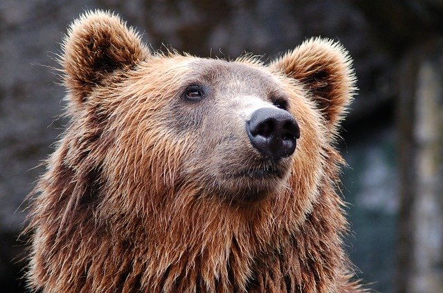

How does the CNN classify images?

As mentioned previously, based on the features that have been extracted by the convolutional layers, classification of the image will then take place accordingly.
We call this as having certain highly activated feature maps that correspond to that particular class.
What does that mean?
For example, we would expect that an image of a cat would most likely have highly activated feature maps corresponding to cat ears or the pattern on the cat's fur.
In implementation, how a CNN works remains a black box, however by understanding how the feature maps work and visualising them, we can actually get a better insight into the inner workings of a CNN.
How can we understand feature maps?
For us to better understand feature maps and the patterns that significantly activates one, we could:
- Look for specific images which result in a high mean actviation of that particular feature map
- Generate a pattern by optimising pixel values in an input image, visualising an image which significantly activates a feature map
Let's visualise some feature maps!
We shall now generate patterns for various feature maps throughout the convolutional layers of the model.


Notice how some patterns seem to be very familiar?
Let us try to interpret some of these feature visualisations, and confirm our interpretations.
*** NTERACTIVE ***
1. Which image do you think corresponds to this feature map?



2. Which image do you think corresponds to this feature map?